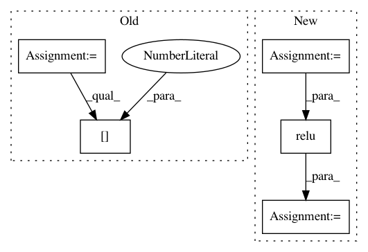

4654c35c6deb2e17d5436527a71d1683a2e409d6,vgg.py,,net,#Any#Any#,24
Before Change
layers.append(new)
def net(data_path, input_image):
layers = [
"conv1_1", "relu1_1", "conv1_2", "relu1_2", "pool1",
"conv2_1", "relu2_1", "conv2_2", "relu2_2", "pool2",
"conv3_1", "relu3_1", "conv3_2", "relu3_2", "conv3_3",
"relu3_3", "conv3_4", "relu3_4", "pool3",
"conv4_1", "relu4_1", "conv4_2", "relu4_2", "conv4_3",
"relu4_3", "conv4_4", "relu4_4", "pool4",
"conv5_1", "relu5_1", "conv5_2", "relu5_2", "conv5_3",
"relu5_3", "conv5_4", "relu5_4"
]
data = sio.loadmat(data_path)
mean = data["normalization"][0][0][0]
mean_pixel = np.mean(mean, axis=(0, 1))
constants = data["layers"][0]
net = []
for i, kind in enumerate(layers):
short = kind[:4]
if short == "conv":
weights = constants[i][0][0][0][0][0]
// in matconvnet, weights are [width, height, depth, num_filters]
// but in tensorflow, [height, width, in_channels, out_channels]
weights = np.transpose(weights, (1, 0, 2, 3))
bias = constants[i][0][0][0][0][1].reshape(-1)
new = _conv_layer(weights, bias)
elif short == "relu":
new = tf.nn.relu
After Change
weights = data["layers"][0]
net = {}
current = input_image
for i, name in enumerate(layers):
kind = name[:4]
if kind == "conv":
kernels, bias = weights[i][0][0][0][0]
// matconvnet: weights are [width, height, in_channels, out_channels]
// tensorflow: weights are [height, width, in_channels, out_channels]
kernels = np.transpose(kernels, (1, 0, 2, 3))
bias = bias.reshape(-1)
current = _conv_layer(current, kernels, bias)
elif kind == "relu":
current = tf.nn.relu(current)
elif kind == "pool":
current = _pool_layer(current)
net[name] = current
assert len(net) == len(layers)
return net, mean_pixel
In pattern: SUPERPATTERN
Frequency: 3
Non-data size: 5
Instances
Project Name: anishathalye/neural-style
Commit Name: 4654c35c6deb2e17d5436527a71d1683a2e409d6
Time: 2015-12-02
Author: me@anishathalye.com
File Name: vgg.py
Class Name:
Method Name: net
Project Name: apache/incubator-tvm
Commit Name: c94623ad0dac5fa5ce7a9a3c4ecb794351ebc610
Time: 2020-10-29
Author: anshuman.t@huawei.com
File Name: tests/python/frontend/tflite/test_forward.py
Class Name:
Method Name: _test_relu
Project Name: maciejkula/spotlight
Commit Name: 70e4d7fe60a9658bb27b9f5fb67592a1222b2ec3
Time: 2017-07-06
Author: maciej.kula@gmail.com
File Name: spotlight/sequence/representations.py
Class Name: CNNNet
Method Name: user_representation